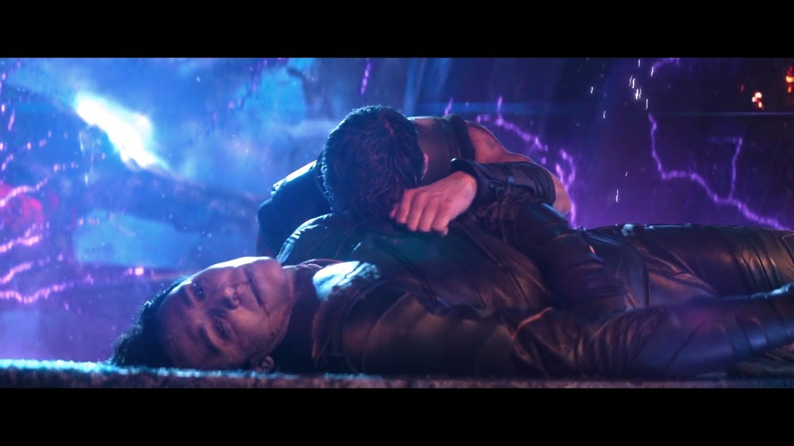
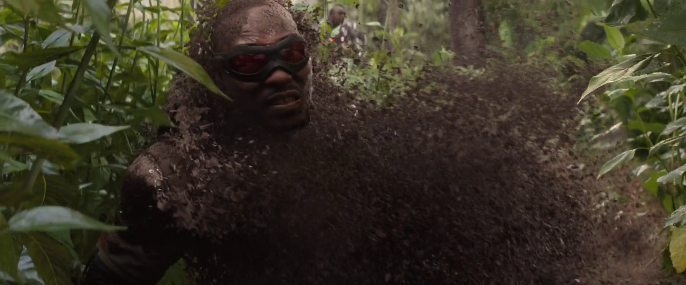

All Deaths of Infinity War
1.Loki and Heimdall
Heimdall: Allfathers, let the dark magic... flow through me one last... time...(Thanos tabs him with his sword).
Loki :"I, Loki, Prince of Asgard, Odinson, the rightful King of Jotunheim, God of Mischief, do hereby pledge to you, my undying fidelity."
Thanos: Undying? Choose your words wisely (lifts and snaps his neck)
Loki: you’ll never be a god!
Thanos: No resurrections this time! 
2.Gamora
Thanos kills his favourite daughter Gamora to sacrifice her soul to get the soul gem.
Gamora: This is not LOVE.
Thanos: I’m sorry Lil one!

3.Winter Soldier
After Thanos finishes his quest of getting all the six infinity stones, he snaps his fingers and half of the universe demolishes.
Bucky : Steve?
Best friends since childhood Steve rogers and Bucky Barnes are inseparable in childhood playground and battlefield fighting Nazis, it will be interesting to see how Steve rogers comes back after death of his best friend.

4.Black panther:
King T’challa tries to comfort his general and best friend Okoye to pull herself together in battlefield after looking at everyone disappearing.
T’challa:” Up general, this is no place to die”.
The snap kills him instead

5.Groot
The fan favourite member of guardians of galaxy dies in front of his father figure rocket raccoon.
Groot: I AM GROOT ( DAD)
Rocket: Oh! Groot, NO!!NO!

6.Wanda Maximoff / Scarlett witch
After failing to save her love (vision) from thanos, wanda disintegrates holding disassembled vision in her hands. This day has taken a lot of toll.

7.Sam Wilson / Falcon
Rhodes searches for Sam in battlefield Sam disintegrates
8.Mantis and Drax
Mantis being the empath, senses that something wrong is happening everywhere, all the souls disintegrating
Mantis: Something is happening.
Meanwhile Drax calls his captain.
Drax: Quill?
Both become dust

9.Peter Jason Quill / Starlord
Tony Stark: Quill you okay?
Quill: Aw! Man (dies)

10. Doctor strange
Doctor strange sacrifices the time-stone to protect tony stark from thanos, He goes back in time to see possibilities and he saves tony for a reason.
Strange: There was no other way Tony.

11. Peter Parker/ Spider-Man
Remember Tony stark in Spiderman homecoming:"What if somebody had died tonight, different stoy right? Because that’s on you. I feel like that’s on me".
After snap Spiderman senses something bad coming his way, because of his spider-sense, he takes the most time to die, breaking his mentor Tony stark’s heart.
It’d be interesting to see how tony could confront aunt may and how he would come out guilt after death of peter.

Peter Parker: Mr.Stark, I don’t feel so good.
TS: kid, you’re alright!
Peter Parker: I don’t want to go, I’m sorry

Avengers on earth who are left after all the deaths

Thanos rests in a greater universe, looking at sunset, with content and guilt at the same time.What was the guilt for? killing half of the universe? Or his favourite daughter Gamora “The hardest of choices, require strongest of wills”? Right? Thanos?